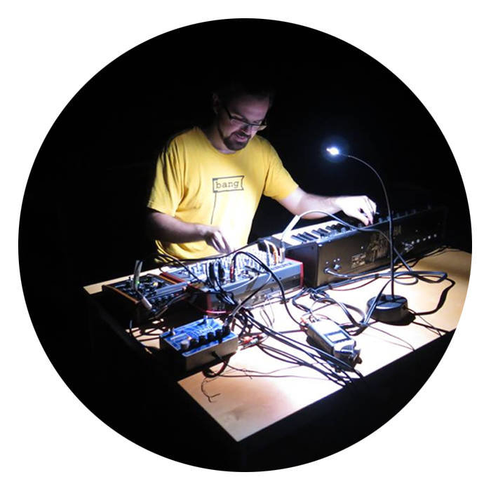
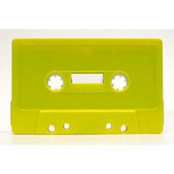

Le projet Monnocone repose sur l'exploration de fréquences analogues minimalistes, de leurs interactions, leur transformations, leur conflits et leurs expirations.
Monnocone est un projet non-numérique. Ce projet n'utilise pas d'ordinateurs pour la génération des sons, et les pièces sont généralement réalisées en direct, sans montage. L'ensemble des pièces ont été réalisées à partir de systèmes analogues, prêts pour le live. Il repose sur l'exploration de sonorités épurées, non-élaborées, à proximité du courant électrique brut qui les génèrent. Il s’agit de musique pré-électronique, électrique, si le terme voulait dire encore dire quelque chose.
Ce projet ne présente ni rythmes, ni mélodies, ni harmonies. Il ne vise pas la dissonance, mais est à la recherche d’une beauté nouvelle.
Monnocone est inspiré par Andrea-Jane Cornell, Émilie Mouchous et Stéphane Claude.
Depuis septembre 2014, Monnocone a lancé quatre oeuvres de musique électronique expérimentale: Jaune, un album distribué en format cassette, ainsi que trois EPs distribués sur Bandcamp, Musique Austère, et 40 oiseaux et Single.
#3) 22 Août 2015 @ La Passe
avec Elizabeth Millar, Craig Pedersen, Simon Chioni et cie
#2) 18 juin 2015 @ Galerie Clark (Société secrète, soirée finale avec performances)
avec Jacques Marchand (ex-Madame) et cie
#1) 4 janvier 2015 @ Noise Sundaee, La Plante
avec Thomas Dupouy et cie

L'album « Jaune » a été réalisé avec un synthétiseur analogue vieillissant (le Yamaha CS-5 de 1979 pour les intimes). Ses fonctionnalités ultra-minimalistes encadrent bien le cadre de cette création, qui joue sur l'équilibre et le déséquilibre du son dans un cadre de fidelité limitée (lofi), et l’exploration des douces distorsions qui s'en suivent. Malgré ses limitations, ce synthétiseur excelle dans les fréquences pures, notamment les fréquences infragraves, qui ne sont pas préfiltrées.
« Jaune » fait référence à l'album de Jean-Pierre Ferland. Si le titre est ironique, ce n'est pas envers l'oeuvre originale, mais plutôt envers la méconnaissance de l'album et de la période de sa création.
À noter, puisque les paramètres des compositions ont été préservées, il est possible de réinterpréter ces pièces dans un contexte live.
Informations supplémentaires sur les pièces individuelles :
Une de mes techniques préférées sur cette oeuvre est le nuage de son, née de la rétroaction infinie entre les instruments (la sortie de l'un dans l'entrée de l'autre étant lui-même présent dans la sortie), ce que j'appelle affectionément "croiser les faisceaux" (Référence: https://www.youtube.com/results?search_query=ghostbuster+cross+the+streams)
La pièce « Documentaire de l'ONF » joue sur la nostalgie d'une époque de création débridée, en utilise des synthétiseurs anciens et des pédales de tape loops pour émuler le son desdits documentaires
La pièce « Saturer les sources » explore le feedback d’une console en rétroaction.
La pièce « Infra » est fondée sur une exploration de ces fréquences ultragraves.
La pièce « Balance » se fonde sur deux pédales de reverb se nourrissant mutuellement, produisant une modification et une évolution constante d'un son à partir d'une de ses particularités. Réalisé avec équilibre, le son pourrait théoriquement se reproduire à l'infini.
Les pièces « Parenthèses 1,2,3 » conceptualisent chacune une idée sonore précise, qui déroulent sur une durée égale.
« Tiers Paysage » émule les sonorités des marais, des champs et des autres espaces en friche. La pièce utilise les filtres analogiques en s'inspirant de l'esthétique de Morton Subotnick et de ses Buchla.
Finalement « Western Spaghetti Analogue » est une performance audio réalisée dans le cadre d'un atelier à OBORO, qui explorait le lien entre Monnocone et Ennio Morricone.
Signé, l'artiste qui donnait trop d'information.